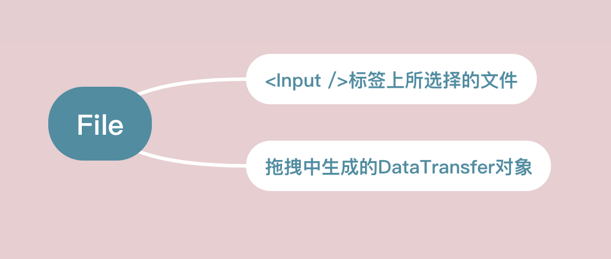
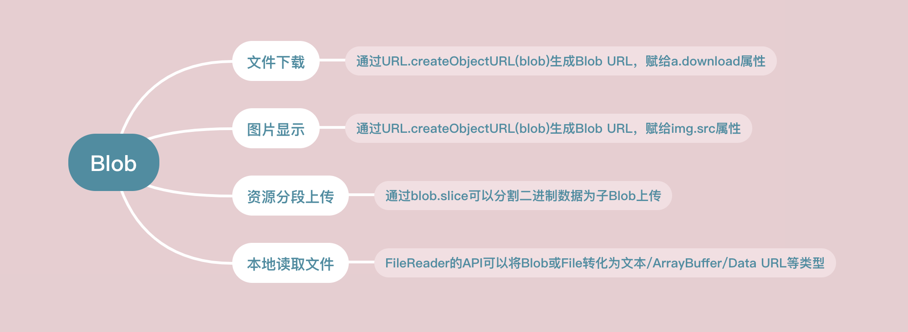
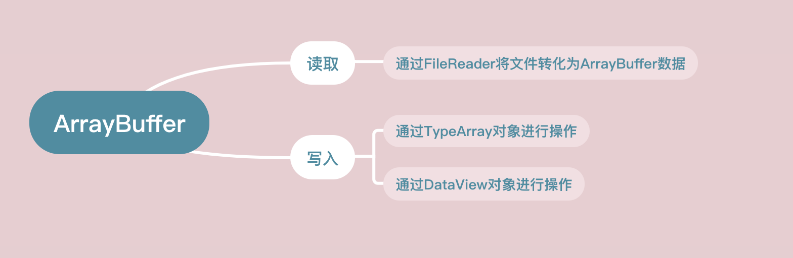

本文最后更新于：21 分钟前
最近常接到文件上传和下载的需求，需要频繁处理二级制数据，本文将记录Javascript二进制数据处理的相关知识点，已备后期查阅。
概述
Blob: 前端的一个专门用于支持文件操作的二进制对象
ArrayBuffer：前端的一个通用的二进制缓冲区，类似数组，但在API和特性上却有诸多不同
Buffer：Node.js提供的一个二进制缓冲区，常用来处理I/O操作
三者结合的使用场景
上传
使用 multipart/form-data 上传File、Blob和String数据
FormData 对象（浏览器端）的字段类型可以是 Blob, File, 或者 String: 如果它的字段类型不是Blob也不是File，则会被转换成字符串类
# upload.ts
import axios from 'axios'
import { Message } from 'element-ui'
let CancelToken = axios.CancelToken
export const upload = (file: File, success: Function, failure: Function, percentHandle: Function, vueObject?: any) => {
return axios.get('//***/post-policy?object=' + encodeURIComponent('/' + file.name)).then((r) => {
const formData = new FormData()
const config = {
headers: {
'Content-Type': 'multipart/form-data'
},
# 上传进度
onUploadProgress: (event: any) => {
const percent = (event.loaded / event.total) * 100
percentHandle({
loaded: event.loaded,
total: event.total,
percent: percent.toFixed(3)
})
},
cancelToken: new CancelToken(function executor(c) {
# 这个参数 c 就是CancelToken构造函数里面自带的取消请求的函数，这里把该函数当参数用
vueObject && (vueObject.cancelUpload = c)
})
}
const {
OSSAccessKeyId, policy, Signature, key, server, url
} = r.data
formData.append('OSSAccessKeyId', OSSAccessKeyId)
formData.append('policy', policy)
formData.append('Signature', Signature)
formData.append('key', key)
formData.append('success_action_status', r.data.success_action_status) # String
formData.append('file', file) # File
# formData.append('text', new Blob(["Hello World"])) # Blob
axios.post(server, formData, config).then(() => {
success({
...file, url
})
})
}).catch((err) => {
console.log('Uoload - Error：', err)
failure()
})
}FormData 也可以在Nodejs端使用，需引入额外的包，例如：
var FormData = require('form-data');
var fs = require('fs');
var form = new FormData();
form.append('my_field', 'my value');
form.append('my_buffer', new Buffer(10)); // Buffer
form.append('my_file', fs.createReadStream('/foo/bar.jpg'));网关（Nodejs）
# koa
# 使用puppeteer将html转为pdf
router.all('/gw/ai/pdf', async (ctx) => {
const url = ctx.request.body ? ctx.request.body.url : ''
if (!url) {
ctx.body = api.error({
code: 9,
message: '页面链接为必传项',
result: null
})
return
}
const browser = await puppeteer.launch({
headless: true,
args: ['--no-sandbox']
});
const page = await browser.newPage();
await page.goto(`${url}?t=${new Date().getTime()}`, {waitUntil: 'networkidle2'});
page.evaluate(() => {
document.querySelector("#btns").style.display = 'none'
})
// https://github.com/puppeteer/puppeteer/blob/v1.7.0/docs/api.md#pagepdfoptions
// <Promise<Buffer>> Promise which resolves with PDF buffer.
// 各种单位尺寸皆可：px、in、cm、mm
const pdfBuffer = await page.pdf({path: 'gw-ai-pdf.pdf', width: '2105px' , height: '1487px'}); # Buffer
ctx.set('Content-Type', 'application/octet-stream');
ctx.body = pdfBuffer
await browser.close();
})
# 拓展
# stream 转 buffer
function streamToBuffer(stream) {
return new Promise((resolve, reject) => {
const buffers = []
stream.on('error', reject)
stream.on('data', data => buffers.push(data))
stream.on('end', () => resolve(Buffer.concat(buffers)))
})
}
# buffer 转 stream
let Duplex = require('stream').Duplex
function bufferToStream(buffer) {
let stream = new Duplex();
stream.push(buffer);
stream.push(null);
return stream;
}下载
# 客户端下载文件：
const res = await axios.post('http://***/demo/gw/ai/pdf', {}, {
headers: { 'Content-Type': 'application/json' },
responseType: 'arraybuffer' }
)
FileSaver.saveAs(new Blob([new Uint8Array(res.data)]), 'demo.pdf') # ArrayBuff 转 BlobBlob
Blob是用来支持文件操作的。简单的说：在JS中，有两个构造函数 File 和 Blob, 而File继承了所有Blob的属性。
File对象可以看作一种特殊的Blob对象。
获取File对象的方式：

File对象是一种特殊的Blob对象，那么它自然就可以直接调用Blob对象的方法。
Blob对象的方法

Blob下载文件
通过window.URL.createObjectURL方法可以把一个blob转化为一个Blob URL，并且用做文件下载或者图片显示的链接。
Blob URL所实现的下载或者显示等功能，仅仅可以在单个浏览器内部进行。而不能在服务器上进行存储，亦或者说它没有在服务器端存储的意义。
通过window.URL.createObjectURL，接收一个Blob（File）对象，将其转化为Blob URL,然后赋给 a.download属性，然后在页面上点击这个链接就可以实现下载了
复制代码
<!-- html部分 -->
<a id="h">点此进行下载</a>
<!-- js部分 -->
<script>
var blob = new Blob(["Hello World"]);
var url = window.URL.createObjectURL(blob);
var a = document.getElementById("h");
a.download = "helloworld.txt";
a.href = url;
</script>- tips: download属性不兼容IE, 对IE可通过window.navigator.msSaveBlob方法或其他进行优化(IE10/11)
window.URL.createObjectURL生成的Blob URL还可以赋给img.src，从而实现图片的显示
<!-- html部分 -->
<input type="file" id='f' />
<img id='img' style="width: 200px;height:200px;" />
<!-- js部分 -->
<script>
document.getElementById('f').addEventListener('change', function (e) {
var file = this.files[0];
const img = document.getElementById('img');
const url = window.URL.createObjectURL(file);
img.src = url;
img.onload = function () {
// 释放一个之前通过调用 URL.createObjectURL创建的 URL 对象
window.URL.revokeObjectURL(url);
}
}, false);
</script>Blob文件分片上传
- 通过Blob.slice(start,end)可以分割大Blob为多个小Blob
- xhr.send是可以直接发送Blob对象的
前端，选取一个包含一段话的txt文件<!-- html部分 --> <input type="file" id='f' /> <!-- js部分 --> <script> function upload(blob) { var xhr = new XMLHttpRequest(); xhr.open('POST', '/ajax', true); xhr.setRequestHeader('Content-Type', 'text/plain') xhr.send(blob); } document.getElementById('f').addEventListener('change', function (e) { var blob = this.files[0]; const CHUNK_SIZE = 20; . const SIZE = blob.size; var start = 0; var end = CHUNK_SIZE; while (start < SIZE) { upload(blob.slice(start, end)); start = end; end = start + CHUNK_SIZE; } }, false); </script>app.use(async (ctx, next) => { await next(); if (ctx.path === '/ajax') { const req = ctx.req; const body = await parse(req); ctx.status = 200; console.log(body); console.log('---------------'); } });
本地读取文件内容
如果想要读取Blob或者文件对象并转化为其他格式的数据，可以借助FileReader对象的API进行操作
- FileReader.readAsText(Blob)：将Blob转化为文本字符串
- FileReader.readAsArrayBuffer(Blob)： 将Blob转为ArrayBuffer格式数据
- FileReader.readAsDataURL(): 将Blob转化为Base64格式的Data URL
把一个文件的内容通过字符串的方式读取出来
<input type="file" id='f' />
<script>
document.getElementById('f').addEventListener('change', function (e) {
var file = this.files[0];
const reader = new FileReader();
reader.onload = function () {
const content = reader.result;
console.log(content);
}
reader.readAsText(file);
}, false);
</script>Blob是针对文件的，或者可以说它就是一个文件对象，同时呢我们发现Blob欠缺对二进制数据的细节操作能力，比如如果如果要具体修改某一部分的二进制数据，Blob显然就不够用了，而这种细粒度的功能则可以由下面介绍的ArrayBuffer来完成。
ArrayBuffer
ArrayBuffer的大体的功能

ArrayBuffer跟JS的原生数组有很大的区别，如图所示
通过ArrayBuffer的格式读取本地数据
document.getElementById('f').addEventListener('change', function (e) {
const file = this.files[0];
const fileReader = new FileReader();
fileReader.onload = function () {
const result = fileReader.result;
console.log(result)
}
fileReader.readAsArrayBuffer(file);
}, false);通过ArrayBuffer的格式读取Ajax请求数据
通过xhr.responseType = “arraybuffer” 指定响应的数据类型
在onload回调里打印xhr.response
# 前端 const xhr = new XMLHttpRequest(); xhr.open("GET", "ajax", true); xhr.responseType = "arraybuffer"; xhr.onload = function () { console.log(xhr.response) } xhr.send();
# Node端
const app = new Koa();
app.use(async (ctx) => {
if (pathname = '/ajax') {
ctx.body = 'hello world';
ctx.status = 200;
}
}).listen(3000)通过TypeArray对ArrayBuffer进行写操作
const typedArray1 = new Int8Array(8);
typedArray1[0] = 32;
const typedArray2 = new Int8Array(typedArray1);
typedArray2[1] = 42;
console.log(typedArray1);
# output: Int8Array [32, 0, 0, 0, 0, 0, 0, 0]
console.log(typedArray2);
# output: Int8Array [32, 42, 0, 0, 0, 0, 0, 0]通过DataView对ArrayBuffer进行写操作
const buffer = new ArrayBuffer(16);
const view = new DataView(buffer);
view.setInt8(2, 42);
console.log(view.getInt8(2));
# 输出: 42Buffer
Buffer是Node.js提供的对象，前端没有。 它一般应用于IO操作，例如接收前端请求数据时候，可以通过以下的Buffer的API对接收到的前端数据进行整合
Buffer实战
# 前端
const xhr = new XMLHttpRequest();
xhr.open("POST", "ajax", true);
xhr.setRequestHeader('Content-Type', 'text/plain')
xhr.send("pikaqiu");# Node端
const app = new Koa();
app.use(async (ctx, next) => {
if (ctx.path === '/ajax') {
const chunks = [];
const req = ctx.req;
req.on('data', buf => {
chunks.push(buf);
})
req.on('end', () => {
let buffer = Buffer.concat(chunks);
console.log(buffer.toString()) # 输出 pikaqiu
})
}
});
app.listen(3000)参考资料
https://zhuanlan.zhihu.com/p/97768916
https://www.cnblogs.com/penghuwan/archive/2019/12/17/12053775.html
https://stackoverflow.com/questions/63576988/how-to-use-formdata-in-node-js-without-browser
本博客所有文章除特别声明外，均采用 CC BY-SA 4.0 协议 ，转载请注明出处！